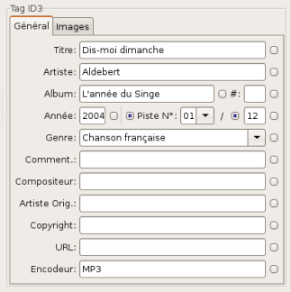
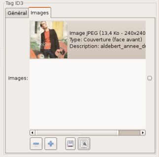
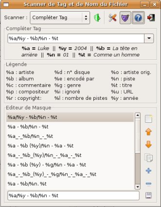
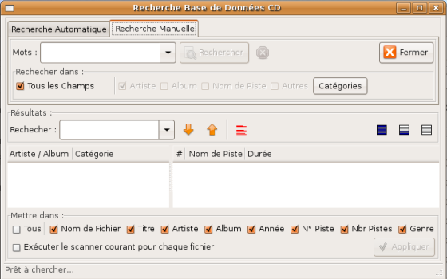
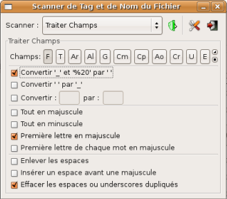

Guide de l'utilisateur du logiciel EasyTAG (version 1.99.11)
- chapitre 4 -
Table des matières.
EasyTAG offre trois modes différents pour modifier les champs d'information du tag de vos fichiers : un mode manuel, un mode automatique via un scanner et un mode automatique via la recherche dans une base de données CDDB. Dans la suite de ce chapitre, nous allons décrire la mise en oeuvre de chacun d'entre eux.
Avant toute chose, il est bon de noter que le traitement du tag des fichiers sera grandement facilité si ces fichiers sont regroupés par album plutôt que d'être tous stockés dans un même répertoire.
De plus, il est important de garder à l'esprit que chaque traitement ne s'applique que sur les fichiers sélectionnés dans la liste de la fenêtre «Sélecteur». De même, la procédure de sauvegarde ne s'applique aussi que sur ces fichiers.
Ce mode est utile lorsque vous n'avez à renseigner/modifier les champs d'information du tag que d'un nombre limité de fichiers.
Si vous voulez traiter l'ensemble des fichiers d'un même album, il peut être préférable, dans un premier temps, d'utiliser le mode de modification via la base de données CDDB (voir paragraphe 4.3).
De même, si les noms des fichiers ou le répertoire de ces fichiers contiennent un certain nombre d'informations pertinentes (artiste, album, année …), il peut être judicieux d'utiliser le mode de modification automatique via le scanner «Compléter le(s) Tag(s)» (voir paragraphe 4.2).
Dans le mode manuel, il est possible de travailler sur un fichier ou de travailler simultanément sur un ensemble de fichiers.

Pour renseigner un champ d'information du tag du fichier, il suffit alors de taper la valeur souhaitée dans la zone de saisie correspondante (voir figure ci-contre). Concernant certains champs, les points suivants doivent être notés :
- Numéro de piste : Le numéro de piste peut être saisi ou être choisi dans une liste déroulante (01 à 30).
- Genre : Le genre peut être choisi dans une liste prédéfinie (liste des genres ID3, de "Acid" à "Tribal") ou bien correspondre à une valeur qui vous est personnelle ("Chanson française", par exemple).
- Année : La saisie de la valeur de ce champ a été simplifiée au maximum. En effet, seule la saisie des deux derniers digits (dizaines et unités) de l'année est nécessaire. EasyTAG complete alors intelligemment les digits manquants (millénaires et siècles). Ainsi, la saisie "04" sera complétée en "2004" et la saisie "94" sera complétée en "1994".

Par ailleurs, pour les fichiers Mp3 et pour les fichiers Flac , il est possible d'incorporer au tag un certain nombre d'images (jpg ou png). Pour cela, on peut procéder de deux manières :
- Utiliser une procédure de type "Glisser/Déposer" dans la zone Images,
- Cliquer sur le bouton et sélectionner dans l'arborescence l'image souhaitée.
Le bouton permet soit d'effacer toutes les images (comportement par défaut) soit de limiter cet effacement aux seules images sélectionnées.
Une fois le choix d'images effectué, il est possible de compléter l'information du champ «Images» en affectant à chaque image un type particulier (couverture "face avant", dépliant intérieur, artiste, …). Pour cela, il suffit de cliquer sur le bouton et d'effectuer un choix parmi la liste des types proposés.
Bien évidemment, lorsque vous travaillez sur l'ensemble des fichiers d'un album particulier, certains paramètres comme le nom de l'album, l'année et le genre sont communs à tous ces fichiers.
De plus, on peut vouloir renseigner un ensemble de fichiers avec un paramètre particulier (fichiers de même genre, par exemple).
Dans ce cas, il est possible d'utiliser le bouton situé à droite de chaque champ. En effet, pour un champ d'information du tag donné (année par exemple), cliquer sur ce bouton revient à affecter la même valeur du champ à l'ensemble des tags des fichiers sélectionnés.
Par ailleurs, si les fichiers présents dans un répertoire correspondent à l'ensemble des fichiers d'un album, la numérotation des différentes pistes au format "numéro de piste/nombre total de pistes" peut se faire rapidement en utilisant le bouton situé à gauche du champ «numéro de piste» et le bouton situé à gauche du champ «nombre total de pistes».
Le premier bouton permet d'affecter au champ "numéro de piste" une valeur correspondant à la position du fichier dans la liste des fichiers présents dans le répertoire (l'ordre des fichiers est donc essentiel).
Le deuxième bouton permet d'affecter au champ "nombre de pistes" une valeur correspondant au nombre de fichiers présents dans le répertoire.
Enfin, dans le mode manuel, l'utilisation de certaines touches permettent de traiter les champs de façon plus efficace :
- La touche Entrée permet de se déplacer rapidement d'un champ à l'autre.
- La touche Tab permet, pour un champ particulier, d'activer directement le petit bouton rond situé à droite de celui-ci (valeur du champ donnée à l'ensemble des fichiers sélectionnés).
- Les touches PageUp et PageDown permettent respectivement de passer au fichier précédent ou au fichier suivant de la liste.
Si les noms des fichiers ou le répertoire de ces fichiers contiennent un certain nombre d'informations pertinentes (artiste, album, année, titre, …), il est possible d'effectuer la modification automatique de certains champs d'information des tags via le scanner «Compléter le(s) Tag(s)». Pour cela, EasyTAG se base sur un modèle de masque qui permet d'extraire les différentes informations contenues dans le nom du fichier et/ou du répertoire et de renseigner alors les différents champs d'information du tag correspondants.
Ce scanner est accessible depuis le menu «Fichier» (voir paragraphe 2.1.1), le menu «Scanner» (voir paragraphe 2.1.3) ou depuis un menu contextuel (voir paragraphe 2.6).
La fenêtre «Scanner de Tag et de Nom de Fichier» est présentée sur la figure ci-contre. Sur cette figure, apparaissent les boutons de contôle suivants :

- bouton
 : Après la saisie d'un masque, cliquer sur ce bouton lance le traitement automatique des champs d'information du tag de l'ensemble des fichiers audio sélectionnés.
: Après la saisie d'un masque, cliquer sur ce bouton lance le traitement automatique des champs d'information du tag de l'ensemble des fichiers audio sélectionnés.
- bouton
 : Ouvre/Ferme la fenêtre «Légende» (voir figure ci-contre) qui rappelle la correspondance entre code du masque et champ d'information du tag.
: Ouvre/Ferme la fenêtre «Légende» (voir figure ci-contre) qui rappelle la correspondance entre code du masque et champ d'information du tag.
- bouton
 : Ouvre/Ferme la fenêtre «Editeur de Masque» (voir figure ci-contre) qui permet de choisir ou de créer le masque adapté à votre besoin. Elle permet, bien sûr, de sauvegarder ce nouveau masque pour tout traitement ultérieur du même type.
: Ouvre/Ferme la fenêtre «Editeur de Masque» (voir figure ci-contre) qui permet de choisir ou de créer le masque adapté à votre besoin. Elle permet, bien sûr, de sauvegarder ce nouveau masque pour tout traitement ultérieur du même type.
La réussite de ce traitement est totalement conditionnée au choix du masque adapté aux données (nom du fichier et/ou nom du répertoire). Dans EasyTAG, de base, vous disposez d'une importante liste de modèles de masque (voir figure ci-contre). On voit qu'un masque est construit à partir d'un certain nombre de codes (%a, %b, %t, …) dont la signification est précisée dans la fenêtre «Légende».
Pour vous guider dans le choix du masque, EasyTAG affiche immédiatement, en dessous de la zone de saisie du masque de la fenêtre «Compléter Tag», les informations extraites du nom du fichier et/ou du nom du répertoire.
Vous pouvez aussi créer votre propre modèle de masque pour correspondre au mieux au format du nom de vos fichiers audio et/ou du nom du répertoire les contenant. Pour mieux comprendre comment utiliser les codes, prenons deux exemples.
| Code | Champ du tag | Valeur extraite |
|---|
| %a | Artiste | Luke |
| %y | Année | 2004 |
| %b | Album | La tête en arrière |
| %n | Piste | 01 |
| %t | Titre | Comme un homme |
Si le fichier dont on veut renseigner le tag et le masque choisi sont les suivants :
- fichier : 01 - Comme un homme.ogg situé dans le répertoire /media/musiques/Luke/2004 - La tête en arrière/.
- masque : "%a/%y - %b/%n - %t".
Les informations extraites alors par l'application de ce masque sont données dans le tableau ci-contre.
Dans la liste des codes de la fenêtre «Légende», on voit qu'il existe un code "%i" qui ne correspond à aucun champ d'information du tag. Ce code permet d'extraire une information et de ne pas l'affecter à un champ particulier.
| Code | Champ du tag | Valeur extraite |
|---|
| %a | Artiste | Luke |
| %i | Aucun | disc |
| %b | Album | La tête en arrière |
| %y | Année | 2004 |
| %n | Piste | 01 |
| %t | Titre | Comme un homme |
Si le fichier dont on veut renseigner le tag et le masque choisi sont les suivants :
- fichier : 01 - Comme un homme.ogg situé dans le répertoire /media/musiques/Luke/disc - La tête en arrière(2004)/.
- masque : "%a/%i - %b(%y)/%n - %t".
Les informations extraites alors par l'application de ce masque sont données dans le tableau ci-contre.
Une fois le choix du masque effectué, cliquer sur le bouton permet de lancer alors le traitement automatique sur l'ensemble des fichiers selectionnés. Si les champs d'information du tag des fichiers sont déjà partiellement renseignés, vous pouvez remplacer toutes les anciennes valeurs des champs par les nouvelles valeurs extraites à la condition d'avoir coché la case Ecraser les champs lors d'un Scan du tag de l'onglet «Scanner» du menu «Préférences».
Si les fichiers sélectionnés constituent l'ensemble des fichiers d'un même album, il est alors possible d'utiliser le mode de traitement automatique via la base de données CDDB. En effet, sur internet, cette base de données répertorie les différentes informations d'un très grand nombre d'albums CD publiés. Il suffit alors de retouver l'album correspondant à vos fichiers pour pouvoir renseigner automatiquement l'ensemble des champs d'information du tag de ces fichiers. Deux modes d'interrogation de la base de données sont disponibles (un mode automatique et un mode manuel). Une bonne stratégie est d'utiliser, dans un premier temps, le mode automatique. Si ce dernier s'avère incapable d'identifier correctement l'album, vous pouvez vous rabattre sur le mode manuel et utiliser alors des mots clé pour guider la recherche.
La recherche se fait par l'envoi à la base de données CDDB d'un paramètre nommé CddbID identifiant normalement le CD audio. Ce paramètre est calculé par EasyTAG à partir des caractéristiques des différentes plages du CD audio (durée totale du CD, nombre de plages, durée de chaque plage). De ce fait, il est nécessaire de sélectionner tous les fichiers de l'album (et seulement ceux-ci) et il est aussi nécessaire que ces derniers soient classés exactement comme dans le CD d'origine.
Une fois cette sélection effectuée, vous pouvez lancer l'interrogation de la base de données. La fenêtre correspondant au mode automatique est présentée sur la figure ci-contre. Pour lancer l'interrogation, cliquez sur le bouton «Rechercher».
La liste des différents albums possibles trouvés dans la base de données (le cddbid n'étant pas unique) apparait alors dans la fenêtre «Résultats». Sélectionnez une des lignes de cette liste pour visualiser à droite les différentes pistes de cet album. Les albums déja consultés sont affichés en rouge.
Une fois le bon album identifié, vous pouvez alors renseigner les champs d'information du tag des fichiers de cet album. Pour cela, il faut dans un premier temps, choisir quels champs mettre à jour. Il est possible de mettre à jour tous les champs ou seulement quelques uns choisis dans la liste (nom de fichier, titre, artiste …). Puis, dans un deuxième temps, cliquer sur le bouton «Appliquer» lance le traitement. Si aucune piste de la fenêtre «Résultats» n'est sélectionnée, les champs d'information de l'ensemble des pistes seront modifiés. Par contre, si une piste particulière est sélectionnée, seuls les champs d'information du tag de cette piste seront mis à jour.
Si aucun album n'a pu être identifié par la recherche automatique (fichiers audio du CD imcomplets …), vous pouvez toujours essayer une recherche manuelle en utilisant des mots clé (ces mots doivent être présents dans le nom de l'artiste, le nom de l'album ou bien encore dans le nom de la piste). La fenêtre correspondant à ce mode est présentée sur la figure suivante.

Pour effectuer la recherche, il faut entrer les "bons" mots clé dans la zone «Mots» puis cliquer sur le bouton «Rechercher». La liste des albums trouvés s'affiche alors dans la fenêtre «Résultats ». La liste de résultats obtenue dans ce mode est identique à celle obtenue via l'outil de recherche du site freedb.org.
A ce stade, il faut noter que cette recherche peut s'avérer peu sélective et conduire à une liste d'albums trouvés de taille importante. Cette liste peut être réduite, soit :
- En effectuant une recherche dans la liste des résultats. Pour cela, il faut entrer un mot clé dans la zone de saisie «Rechercher» de la fenêtre «Résultats».
- En faisant défiler la liste des albums et en pré-sélectionnant un certain nombre d'albums candidats. Ces albums sont affichés en rouge. Il suffit alors de cliquer sur le bouton pour ne conserver que les albums pré-sélectionnés.
Dès que vous avez réussi à identifier le bon album, il suffit alors, pour renseigner les champs d'information du tag de vos fichiers, de procéder exactement comme dans le mode automatique.
Ce scanner ne doit être utilisé que si les noms des fichiers ou les différents champs d'information du tag des fichiers ont déjà été renseignés dans un premier temps. Il permet de rapidement uniformiser toutes ces chaînes de caractères en choisissant une mise en forme particulière.
Ce scanner est accessible depuis le menu «Fichier» (voir paragraphe 2.1.1), le menu «Scanner» (voir paragraphe 2.1.3) ou depuis un menu contextuel (voir paragraphe 2.6).

La fenêtre «Scanner de Tag et de Nom de Fichier» est présentée sur la figure ci-contre. Dans un premier temps, vous devez choisir sur quels champs effectuer le traitement. Cette sélection se fait, dans le haut de la fenêtre «Traiter Champs», en cliquant sur les différents boutons correspondant aux différents champs. Les boutons des champs sélectionnés passent alors en grisé. Pour être complet, précisons la signification des deux boutons suivants :
- bouton : Inverser la sélection des différents champs.
- bouton : Sélectionner/Désélectionner tous les champs.
Une fois la sélection effectuée, il est possible de réaliser les traitements :
- Remplacement de certains caractères (par exemple, élimination des caractères %20 du nom de fichier …).
- Modification de la casse (transformation minuscule/majuscule).
- Suppression de certains caractères en trop.
Enfin, Cliquez sur le bouton , lance les traitements de l'ensemble des différents champs des fichiers sélectionnés.
- RETOUR A LA TABLE DES MATIERES -